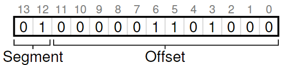

16. Segmentation
在上一章中，我们给一个进程大块连续的地址空间，这导致栈和堆之间的空间可能存在巨大的浪费——内部碎片（internal fragment）。
16.1 Segmentation: Generalized Base/Bounds
利用分段（segmentation）机制，我们可以把内存切分为三个逻辑段：code、heap和stack
如图所示，只有使用了的内存才被分配空间，从而留下大量没有使用的地址空间（有时也叫稀疏地址空间（sparse address spaces））可以容纳。
MMU中的硬件通过三对base-and-bounds来映射虚拟地址到物理地址。
如果地址超出了bound，就会产生著名的segmentation fault
16.2 Which Segment Are We Referring To?
- 显式映射。前两位表示映射到哪个区（code、heap、stack），之后的位数表示相应的offset。也可只用一位表示segment，把code和heap合并。

- 隐式映射。硬件自己检查地址格式，例如如果是PC生成的地址（指令fetch），那么就放在code段；如果地址基于stack or base pointer，那么就放在stack段；其他的则放在heap段。
16.3 What About The Stack?
由于stack中地址由高地址向低地址增长，因此segment寄存器需要支持negative offset（offset - maxSize）
16.4 Support for Sharing
分段机制有助于实现code sharing。这需要硬件支持protection bits，规定读（Read）、写（Write）、执行（Execute）的权限。
.png)
16.5 Fine-grained vs. Coarse-grained Segmentation
上面提到的分段是一种粗分段（coarse-grained）。早期系统支持细分段（find-grained），把内存切割成很多小块，这需要硬件提供分段表（segment table）。
16.6 OS Support
OS对于分段机制提供相应支持：上下文切换；malloc（）时提高segment size register的值；内存不够时拒绝请求；管理物理内存中的free space。
问题：外部碎片（external fragment），一些内存还没有被分配出去，但是由于大小无法fit新进程申请的空间。
一种解决方案是使用紧凑（compact）的物理内存，当无法fit新进程时把一个进程的整个空间与一块连续内存空间合并。然而它开销大，并且使得已存在分段想要扩展空间变得十分困难。
还有一些方法是使用free-list management算法来尝试使得内存尽可能可用，例如best-fit,worst-fit,first-fit,buddy算法。